本文为 2021 第八届华与华百万创意大奖赛参赛案例——爱好文具案例解析。第八届华与华百万创意大奖赛，将于 12 月 21 日在上海静安香格里拉酒店公开竞演， 8 大项目负责人将会亲自为你详细讲解项目创意执行过程中的关键环节。本届大奖赛门票已售罄，购票通道已关闭。了解更多华与华百万创意大奖赛动态，请持续关注华与华微信公众号、华与华官方微博。
爱好文具案例解析我国文具制造企业的生产能力及规模已发展为全球顶尖水平。然而近年来，整个文具行业却面临着以下几个问题：1 ）进口品牌产品质量高、议价能力强，抢占国内高端国产文具市场；2 ）产品开发重外观、轻技术，互相模仿，产品同质化严重；3 ）各大厂家价格战，背后却是品质和利润的下降，形成恶性循环；4 ）原材料价格上涨，劳动力成本上升，企业利润越来越低；2020 年艰难的文具行业又受到疫情冲击，学校不开学，文具需求量大幅下降，企业延迟复工也引发库存和原材料问题。行业问题日益严峻，生产优势不再发挥强势作用，加上疫情影响，文具企业经营一年更比一年难。华与华客户爱好文具，也面临着相同的困局。爱好文具正式成立于 1995 年，专注于文具行业，集生产、销售、科研为一体。他的前身长生制笔诞生于上世纪 80 年代，是中
国第一批制笔企业之一。爱好文具的生产制造能力是国内顶尖，非常多知名的国内外文具品牌其实都是爱好代工生产的。产品内销全国市场，外销也覆盖 100 多个国家与地区。
2018 年爱好文具与华与华达成战略合作， 4 年来，华与华为爱好：1 ）制定企业战略、创意设计超级符号“爱好之心”，以及“爱好文具，爱就是好”的品牌谚语，为爱好打造品牌投资储钱罐。2 ）翻新全线产品包装，规划包装信息层级，提高包装在货架上被发现、被拿起的转化率，提升代理商、业务员理货的效率。包装设计创造定价权，笔芯包装设计更是为爱好获得定价权，价格翻一倍。
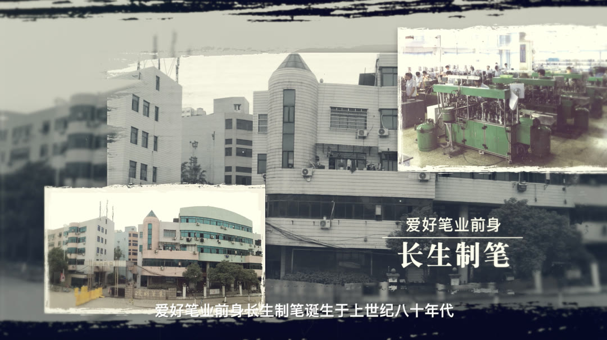
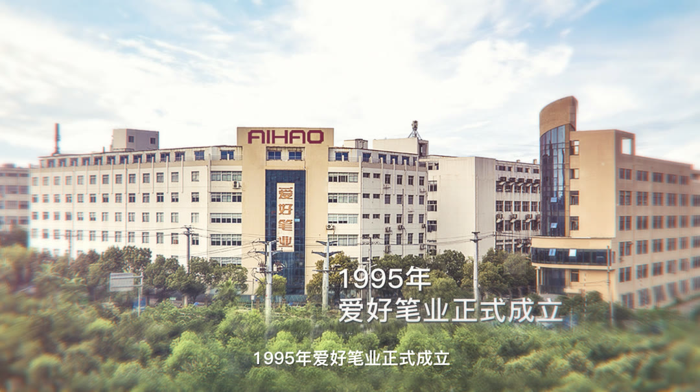
3 ）开发不脏卷考试笔、轻松小熊系列、办公笔等多系列产品。不脏卷考试笔成为爱好考试系列拳头产品，上市 3 年就占据爱好考试系列销售额 27 %的份额。轻松小熊系列更是打开爱好 IP 联名新局面，成为进入高端渠道的敲门砖产品。4 ）设计门头形象、货柜形象，通过门店改善、终端物料、陈列道具开发，代理商大会、订货会改善等一套组合拳，提升爱好渠道信心、提升爱好门店销售力。助力爱好在强大的生产制造能力之上，建立起品牌资产，制造、营销双轮驱动爱好加速发展，在疫情冲击之下，依旧实现同比增长 23 . 8 %！（数据截止 2021 年 9 月）本文将为您讲解，传统制造企业如何玩转营销，建立品牌资产，提升产品销售力，在激烈的市场和恶劣的大环境下，赢得竞争优势，实现销售增长。通过本文，您将学习到：1 、如何用包装设计为消费者提供营销服务，提高产品议价能力；2 、如何用产品开发为消费者提供营销服务，建立爆款长销品；3 、如何创造不一样的订货会，改善为代理商提供营销服务，提升渠道销售力。
1创意服务于品牌价值观符号降低品牌传播成本品牌就是产品的牌子，是一个名字、一个符号。品牌存在的意义，是降低社会的监督成本、降低企业的营销传播成本、降低顾客的选择成本。爱好的品牌名是个低成本的名字，但爱好原有的 logo 却很难记住、也很难向人描述，5 个大写字母长度也很长。
▲爱好文具原 logo
华与华说所有的传播都是符号的编码和解码。拼音字母本质是英文，作为他国文字，很多人不认识、也描述不出来；而到了英语为母语的国家，由于是拼音，也无法被理解，所以这是个编码、解码成本极高、效率极低的符号。并且在产品包装、门头上，长长的英文挤压了中文字的空间，使得中文的“爱好文具”或者“爱好”非常小。这大大降低了爱好品牌在终端被看见、被记住的效率。
▲爱好文具原门头
爱好文具的业务不仅有内贸、还有外贸，为爱好寻找一个全球都认识、都好识别、好记忆的符号，成为我们创意工作的起点，这项工作的起手式就是寻找文化母体。
发挥品牌戏剧性，创意超级符号文化母体从哪里来？首先从品牌名字中寻找，发挥品牌与生俱来的戏剧性，爱好，就是“爱”和“好”，“爱”的符号不思而得就是一颗爱心。爱心是人人都认识、人人都喜欢的符号，无论在国内还是国外，全世界人民对于爱心的描述都是统一的。
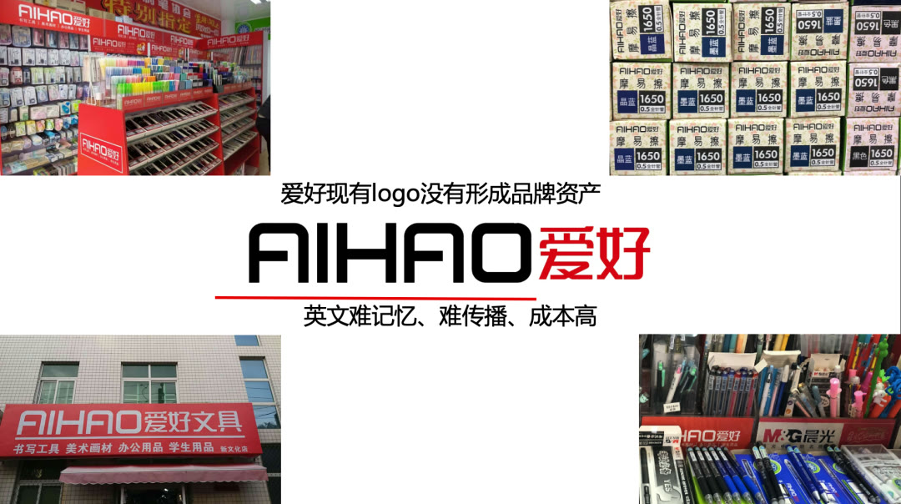
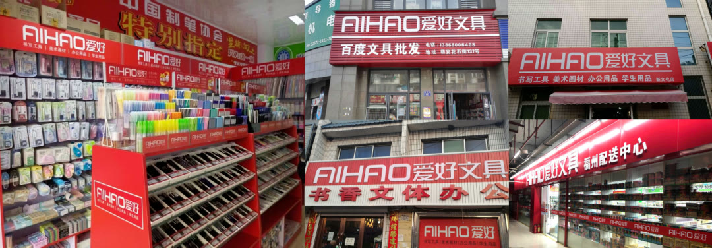
爱好主营业务是学生文具，我们在学生最熟悉的符号中，找到了表达“好”的符号——考卷上的对勾符号，这也是全世界都认识的公共符号。
找到这两个公共符号后，一个全球范围内人人都认识、都记住的、都可描述、可注册的超级符号诞生了。我们将爱好的超级符号——爱好之心，装上门头、印上包装，印上服装，刷新在一切能够被消费者看到的地方，为爱好积累品牌资产，传播爱好品牌。
街道就是货架、门店就是产品，大大的红心，在街道上一下就抓住消费者的眼球，提升爱好门店的发现感！
放大企业家的初心，创意品牌谚语在首季度企业寻宝的过程中，爱好张总曾谈起过爱好品牌名的来源，“爱好”这个名字，是张总的父亲起的，张总的父亲认为爱就是好。
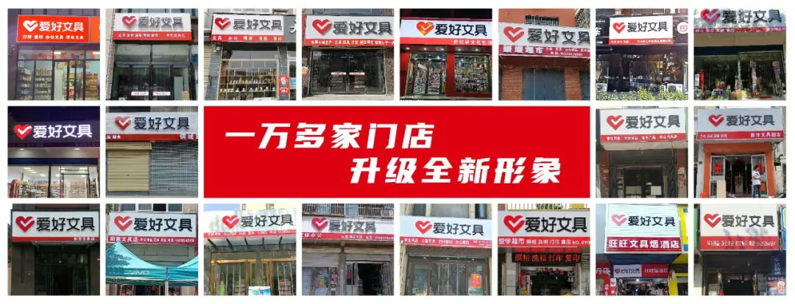
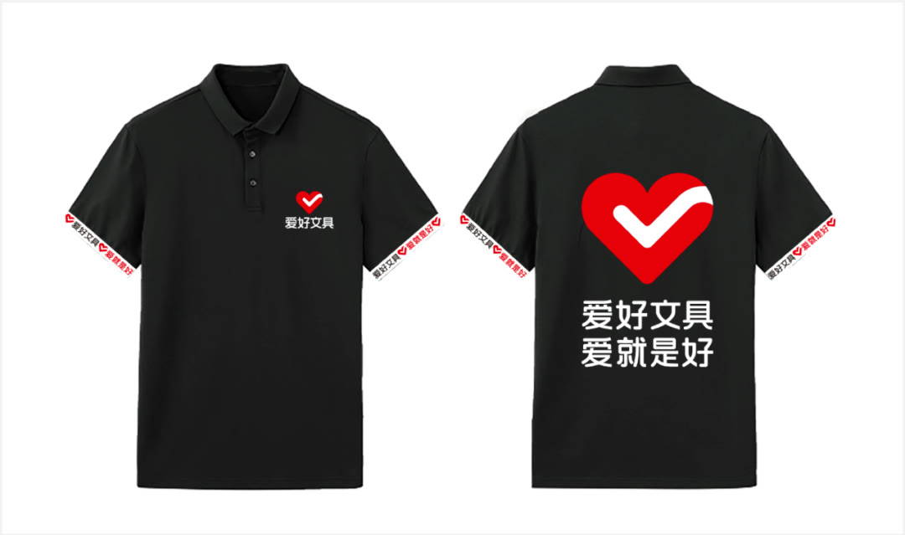
这正是企业家的一片赤子之心和创立品牌的初心！满怀对孩子们的爱，用好原料、好设备、好工艺，用心做好每一款产品，这就是爱好，爱就是好，这也是爱好三十年来始终如一的经营理念。放大企业家的初心，发挥品牌与生俱来的戏剧性和价值感，我们为爱好创意了“爱好文具，爱就是好”的品牌谚语。当我们说这句话的时候，人们是没有任何心里防线的，天然的就会觉得亲近、信赖。没有防备，就能降低品牌的传播成本。
2包装设计提供信息服务提升产品议价能力随着越来越多的中性笔把零售价打到 1 - 1 . 5 元，零售价在 0 . 5 - 1 元左右的笔芯需求量开始逐渐下降，整个行业的笔芯销量都在下滑。为了拉升笔芯销量，爱好曾经尝试过降价以换取销量，但爱好当时大部分的笔芯都没有明确的购买理由，因此处在一个 0 . 5 元的价格区间，文具店卖不高价格，哪怕降价后利润空间依旧不足，推爱好的笔芯的意愿也就降低了，降价并没换取笔芯销量的提升，反而也有所下滑。爱好和华与华合作后，推出了全新的 1 元笔芯系列产品，零售价从 0 . 5 元涨到了 1 元，不仅爱好、代理商、文具店各环节的利润相比过去都增加了，短短 3 年， 1 元笔芯系列还达到爱好笔芯品类销售额的 28 %，真正实现了量利齐飞！让我们来看看这系列笔芯是如何诞生的！
动作一：包装设计获得货架陈列优势包装是品牌最大的自媒体，包装设计的工作要基于三现两原主义——现场、现物、现实，原理、原则。包装的现场，是销售现场即货架前，包装设计是为了把产品在货架上卖出去。包装在琳琅满目的货架上，要能被发现、被拿起，能迅速打动购买者。最好做到 1 秒就看到， 3 秒被打动。这就是从获得陈列优势，到购买理由进行包装设计，让包装自己会说话，放上货架就开卖，自己把自己卖出去。
我们蹲在门店观察消费者如何购买笔芯产品时发现，学生们进店买笔芯，不是找哪个品牌，也不是看哪个卡通图形好看，而是走到货架前，迷茫的看着花花绿绿的笔芯货架，视线环顾几圈后，最终开口问老板——“有没有黑色 0 . 5 子弹头的笔芯”。而当老板走到笔芯货架前时，也是看了几秒后才找到一根黑色 0 . 5 子弹头的笔芯。这一切的背后，都是因为包装上设计的标识太小！
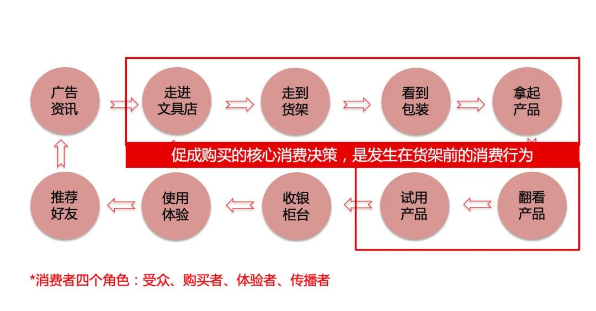
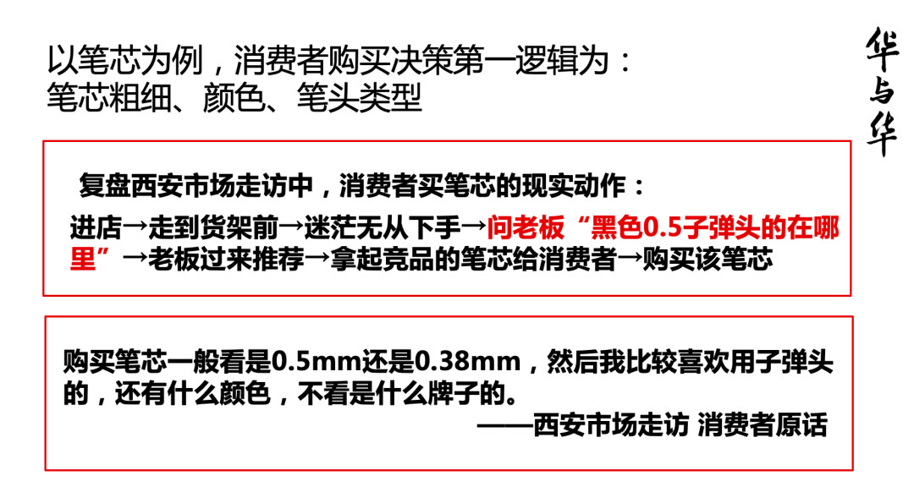
▲真实货架环境
华与华为爱好翻新笔芯包装，将消费者购买决策第一逻辑的笔芯粗细、颜色、笔头类型，在包装正面放到足够大、足够醒目。通过大色块来区分油墨颜色；大大的“ 0 . 5mm ”、“ 0 . 38mm ”“子弹头”“全针管”的信息，让消费者 1 秒就能做出选择；最后我们还把产品包装加宽了 50 %。包装面积变大，在终端的陈列面积也变大，赢得排面优势，增加被消费者看到的可能性。
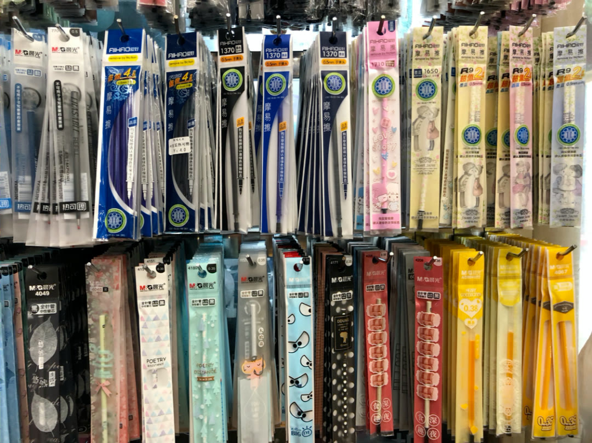
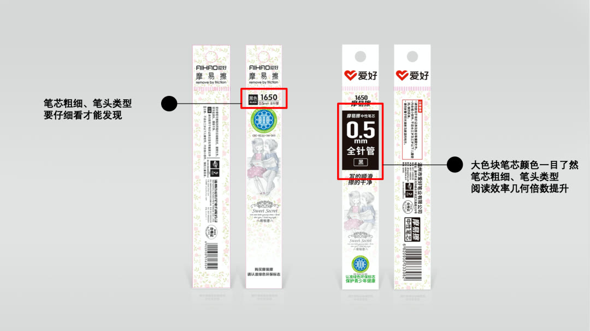
放大字体，醒目标识，这不仅是设计的意识，更是管理的意识，服务的意识，为消费者提供信息服务，为店员提供管理服务。让消费者购买的时候能方便快速的找到自己需要的产品，让店员在理货、推荐的时候能快速拿到对应的产品，这背后是对人的关心，是爱。
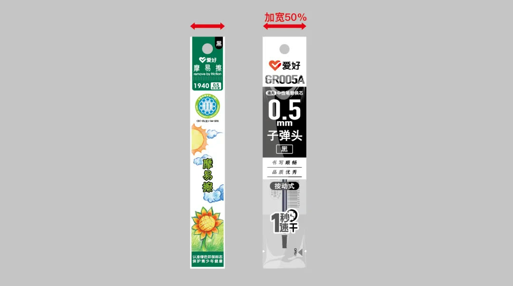
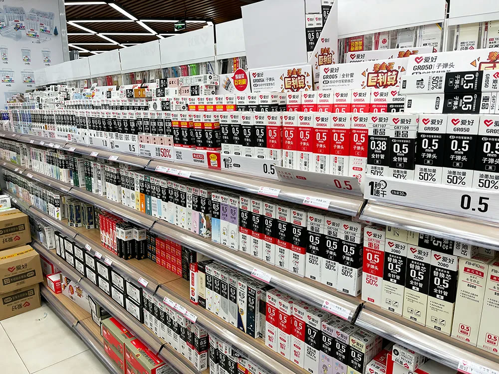
动作二：为新款笔芯产品找到购买理由，创造价值点消费者买的不仅是品牌，最关键的还是产品。我们洞察到学生对于速干是有需求的，尤其是在考试的时候，不想笔墨弄脏考卷。提炼出了“ 1 秒速干”这样一个能够让消费者明确感知的购买理由，当速干的笔芯和不速干的笔芯同时出现时，大部分消费者都会为速干买单。在我们提出 1 秒速干的价值前，爱好还没有类似的产品。爱好通过强大的研发能力，成功进行油墨速干技术革新，确保油墨 1 秒速干，这样就形成了差异化的价值。与此同时，学生每天都有大量的作业需求，很快就会写完一支笔芯，为了减少学生更换笔芯的频率，为学生们减少麻烦，爱好将笔芯容量增大。和市面上简单写着“大容量”的笔芯不同，我们将容量定为“加量 50 %”，让消费者直观感受到产品价值，加量 50 %等于多了半支笔芯！有了这样明确的价值，消费者愿意多支付一半的钱，来购买爱好的笔芯。
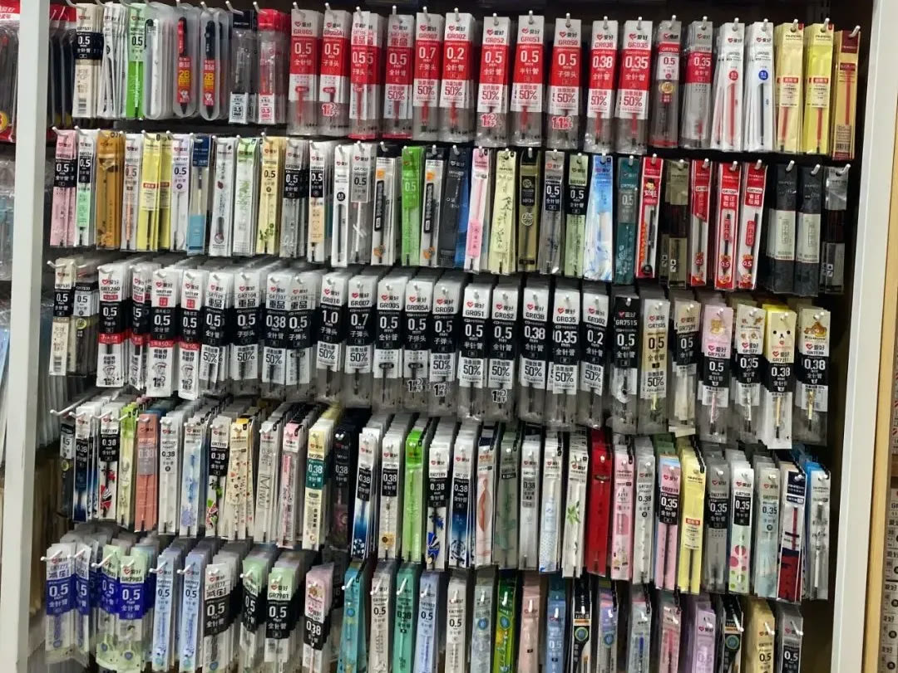
我们通过把握消费现状、洞察消费需求，对笔芯产品进行差异化的设计，创造产品价值，并通过包装设计放大产品价值，以此使得产品获得额外的加价空间，真正让参与的各方都获取更高额的利润，让消费者高效率、低成本地买到高品质价格实惠的产品，真正实现了多方的共赢。
3围绕购买理由的产品开发打造长效爆品在和爱好文具合作的第二季度，我们接到了一个任务：为新研发的考试笔做一套推广方案。文具市场，几乎每个品牌都有考试笔，甚至各个品牌每年都会推出几十款考试系列的产品，竞争异常激烈。如何让爱好全新的考试系列一炮而红，上市就火爆还能持续畅销呢？
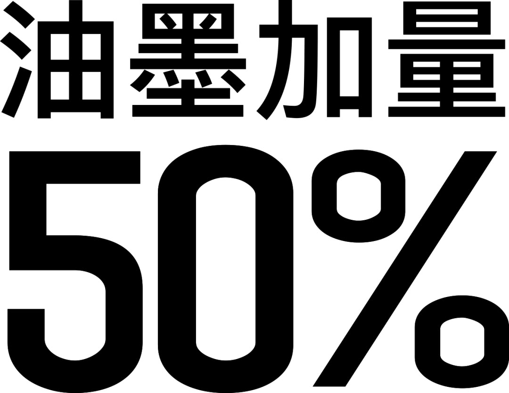
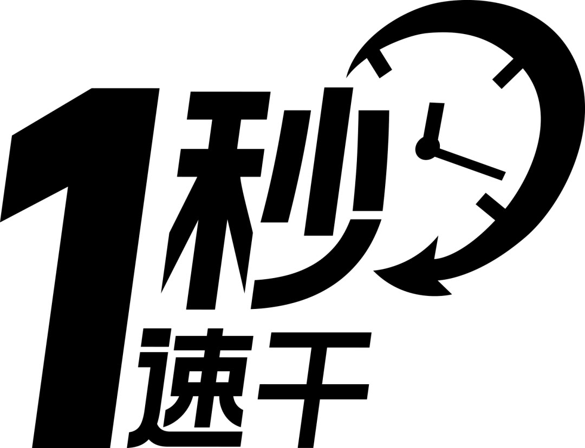
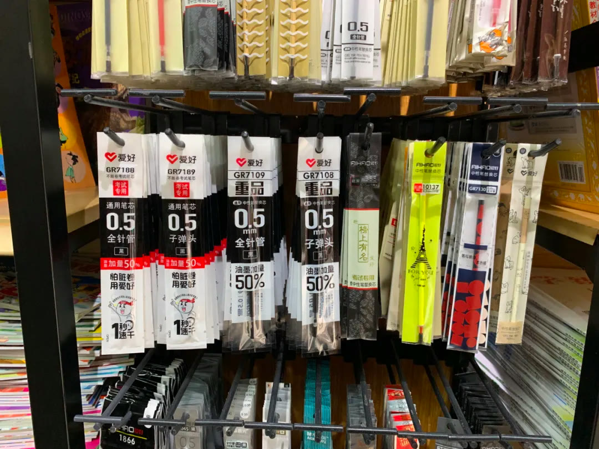
基于“所有的事都是一件事”的思维方式，我们认为解决问题的关键在于——必须赋予爱好考试笔能够快速突破消费者心理防线、打动购买行为的购买理由。我们要做的不只是一个考试笔推广方案，而是把产品开发策略、包装设计、广告创意放在一个系统里一起思考、一次成型，即爱好新考试笔开发方案。
产品开发第一步：寄生消费场景，挖掘购买理由产品的本质是购买理由，产品开发的本质就是创意购买理由。我们找到了一个强大的母体，考试前一定会发生的场景——老师叮嘱班里的同学：“一定要注意保持卷面整洁，不会做也要保持字迹清晰、卷面整洁，可以提高卷面分”。“不要弄脏考卷”是老师的指令，烙印在学生的脑海里。特别是在高考中，弄脏考卷、答题卡一般不予更换；即使最终换一张新的，重新填写也浪费宝贵时间。“不要弄脏考卷”是高考规则的要求，每个学生都会服从。“不脏卷”就是能够突破消费者心理防线的超级词语，就是我们要找的能够直接打动消费者购买的购买理由！
产品开发第二步：围绕购买理由进行产品命名命名即召唤，把产品的价值召唤出来，把购买理由召唤出来。如果你能把价值写进名字里，就不要把它放在口号上；如果能把价值写进名字里，就不要怕名字长。我们将购买理由“不脏卷”直接嵌入产品名称，创意了“爱好不脏卷考试笔”。直接用一个长名字，降低品牌传播成本，将品牌、产品类别、购买理由、使用体验，全包含在 8
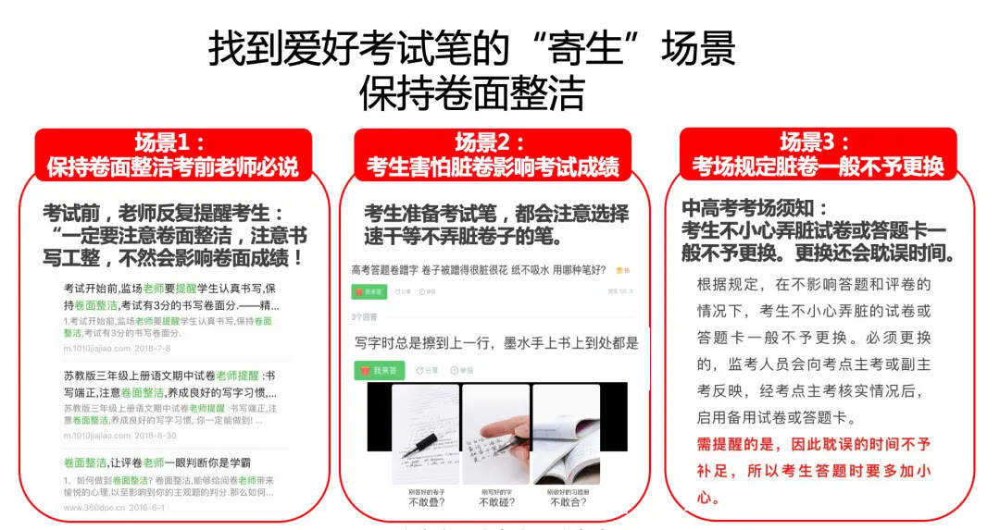
个字里。
产品开发第三步：包装设计放大购买理由、获得陈列优势包装设计除了解决产品被发现的问题，还要解决被理解的问题。爱好不脏卷考试笔包装上每个设计的信息都在发出刺激信息，刺激消费者购买。大大的“怕脏卷，用爱好”向消费者发出购买邀请。
右上角的“考试专用”进一步强调品类，提高消费者选择效率。
卡通形象以对话的形式说出“老师再也不用担心我弄脏考卷了”，唤醒消费者脑海中的使用场景。
围绕不脏卷的购买理由，进一步提供 4 点产品科学： 1 秒速干、不洇纸、不断墨、不漏墨，进一步打动购买。
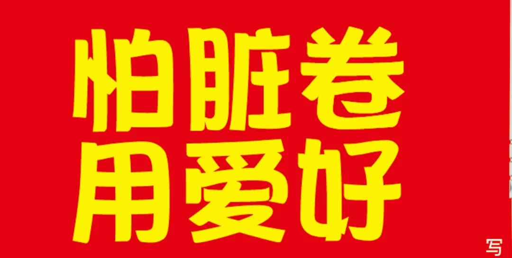
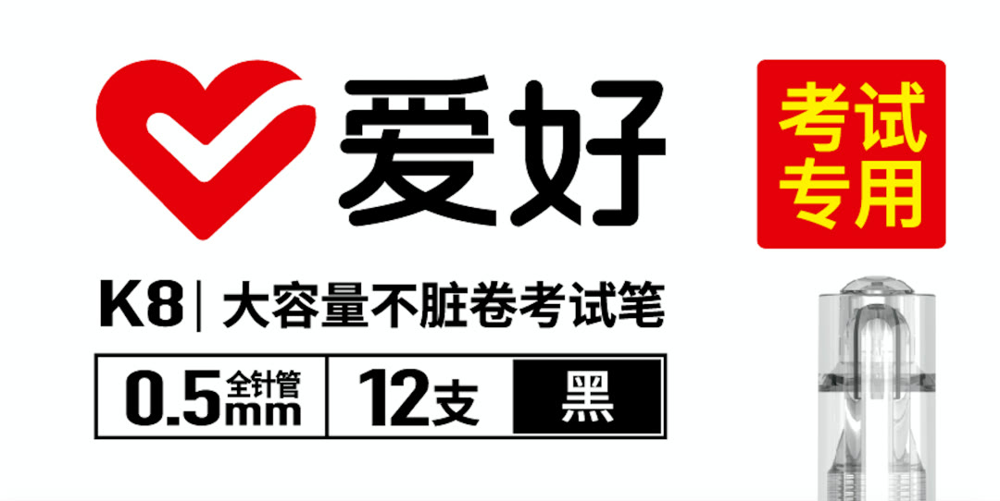
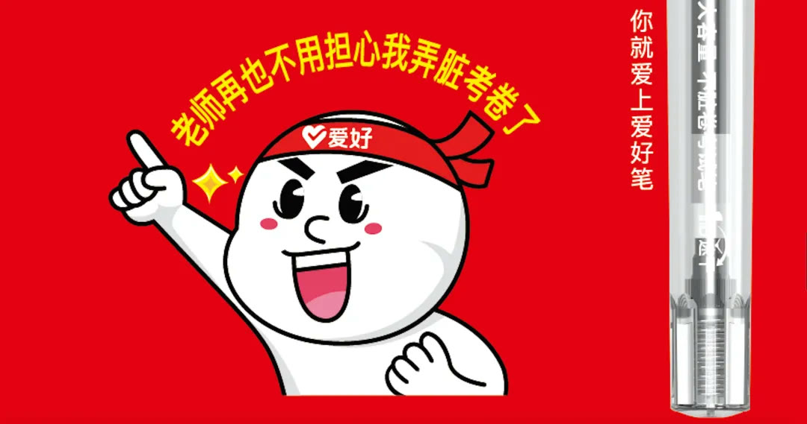
提供每一款不同型号独特的卖点——“内置弹簧 书写缓压”“全针管”等。
从口号到每一个具体的卖点，一个包装就能完成一次完整的进攻，让消费者“坐上滑滑梯，滑向收银机”。
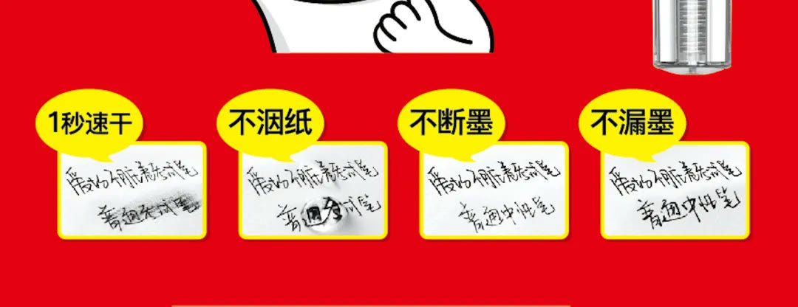
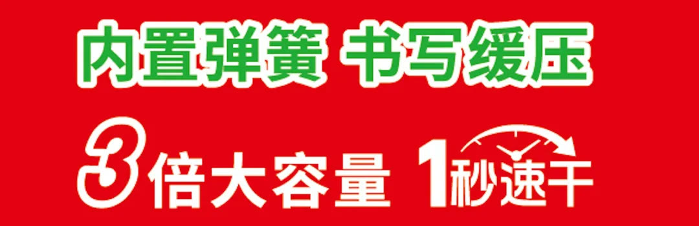
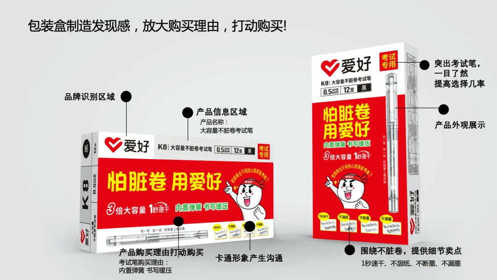
产品开发第四步：产品技术升级，实现购买理由爱好原有考试笔产品，不符合“不脏卷”的产品特性。因此项目组围绕“不脏卷”的购买理由，总结出市面上消费者认为好用的考试笔的几大特性，以此提出考试笔技术升级的 3 大要求。1 ）研发生产确保爱好不脏卷考试笔速干、耐水性；2 ）研发生产确保爱好不脏卷考试笔顺滑书写；3 ）提升爱好墨水浓郁度、显色度。爱好文具以强大的技术研发与生产工艺，最终实现爱好不脏卷考试笔， 1 秒速干、好写顺滑，不洇纸、不漏墨、不断墨的产品性能，为消费者提供一款不怕弄脏考卷的考试笔。
产品开发第五步：固定一个有翼飞翔的营销口号
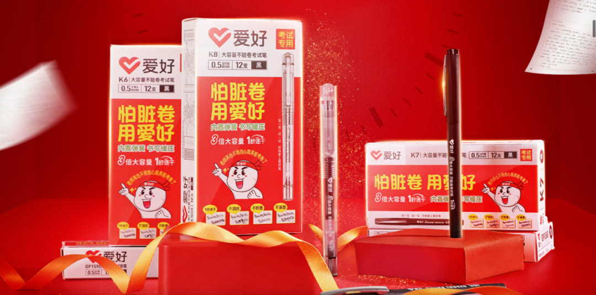
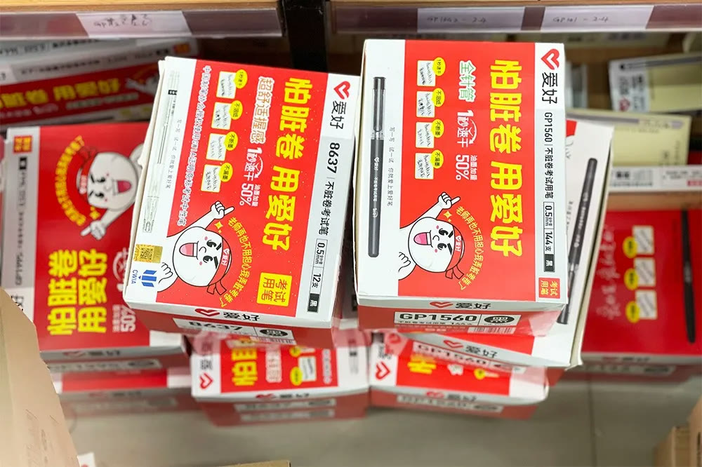
考试本身就是人类生活中循环往复发生的母体，一到每年的考试季，无论是期中考，月考，中考，高考，都会在网上掀起一阵话题讨论。考试自带话题和流量，考试这个母体必将循环往复的发生，母体一旦循环至此，考试系列产品的购买必将发生。我们要做的就是把爱好文具寄生到考试的母体中去，获得母体的原力，将考试与爱好联系起来，成为人们考试时第一联想，第一选择的品牌和道具。每当考试季来临，大家就会想起爱好、购买爱好。所以我们为爱好考试系列创意了一个传播口号，年年可以用、重复积累品牌资产，打动顾客购买。爱好考试系列的话语从哪来？寄生在考生最希望听到的话语里！每个考生最希望的一定是取得好成绩的祝愿。我们在微博上搜索考试的关键词，就会出现大量的考生祈祷能够考试考的好点。除此之外，老师也给学生发去祝愿他们考好的祝福。
因此我们年年都可以用的考试季活动口号就应运而生了！——“考得好，用爱好！”首先“考得好”是对母体中的学生说话，一句好彩头吉祥话能一下突破他们的心理防线。其次用爱好，是一句行动句，直接下达要用爱好的行动指令。其次，这句话押韵、好记、好传播，年复一年的在考试季使用，还能积累我们的品牌资产！并且，这句话还是一句超级句式，能推销各种系列的考试产品。考得好，用爱好不脏卷考试笔，考得好，用爱好榜上有名考试笔！
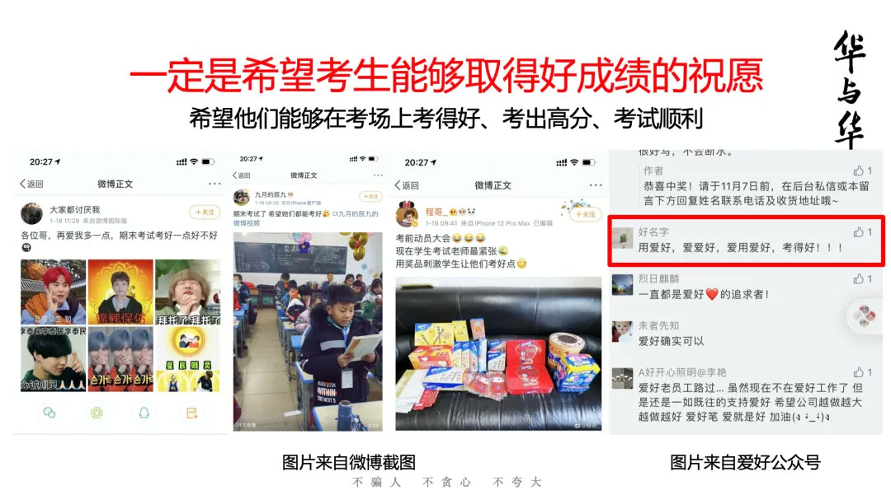
合作 4 年来，华与华为爱好成功开发了不脏卷考试系列产品、办公系列中性笔产品，还推荐爱好联盟轻松熊、名侦探柯南 2 大 IP ，成为爱好 IP 系列的拳头产品。轻松小熊系列推出第一年不仅热销超千万，还帮助爱好成功进入西西弗书店等高端渠道，名侦探柯南系列上市就大爆，席卷全国中小学校边店， 4 个月铺货 6000 多家终端，热销千万！
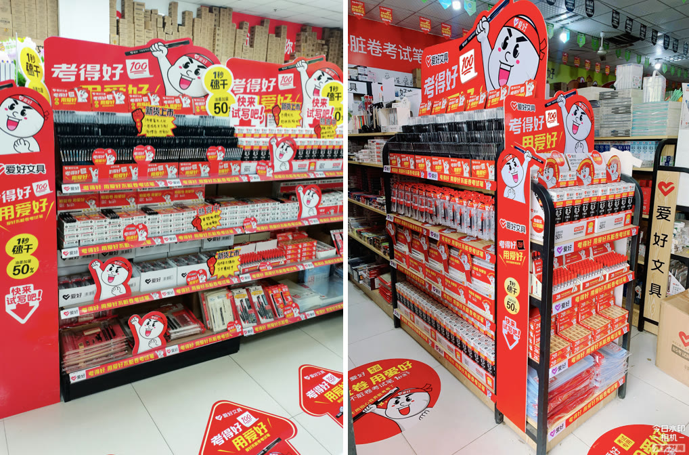
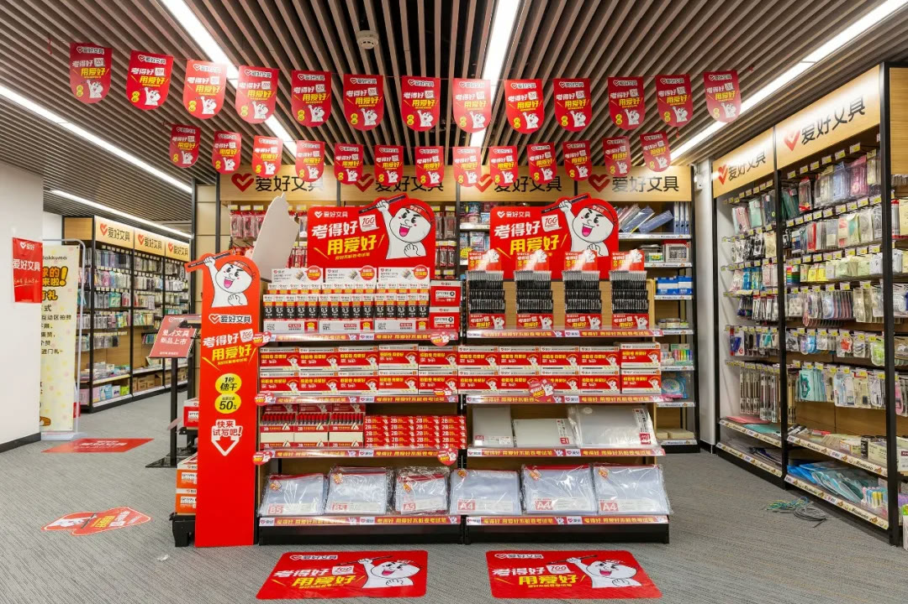
4重新设计选择逻辑全面提升订货会订货效率订货会对于文具企业非常重要，集中式、大批量订货是保障全年销量的关键环节，也是增强代理商与公司感情交流、加强合作关系的重要途径。对于代理商、文具店老板而言，订货会能够更直观地现场看产品、了解产品，一次性选购新品、补货也能获得更大的优惠政策，订货会还是各个代理商、文具店老板相互
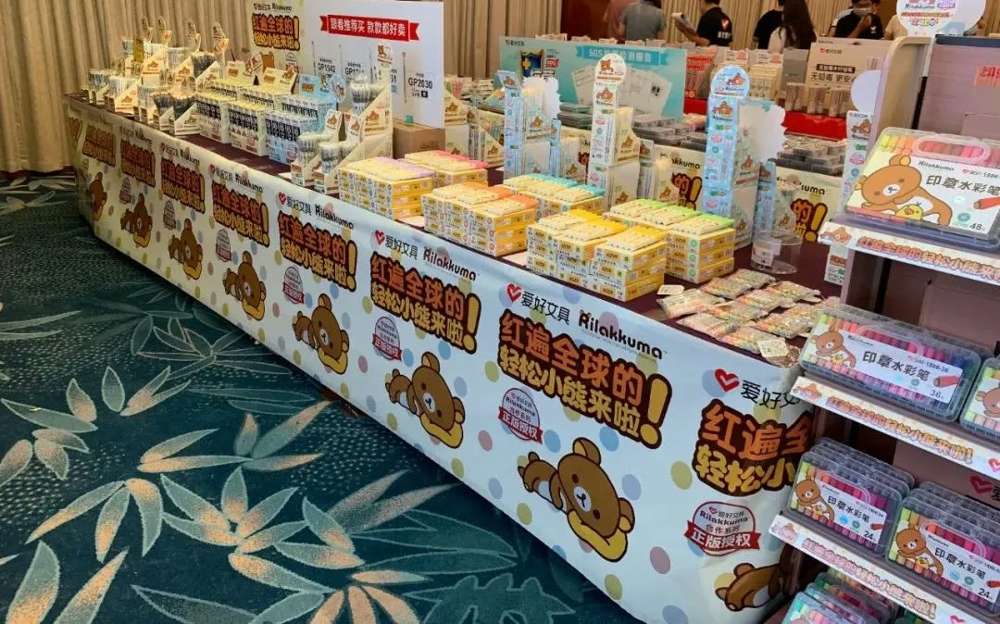
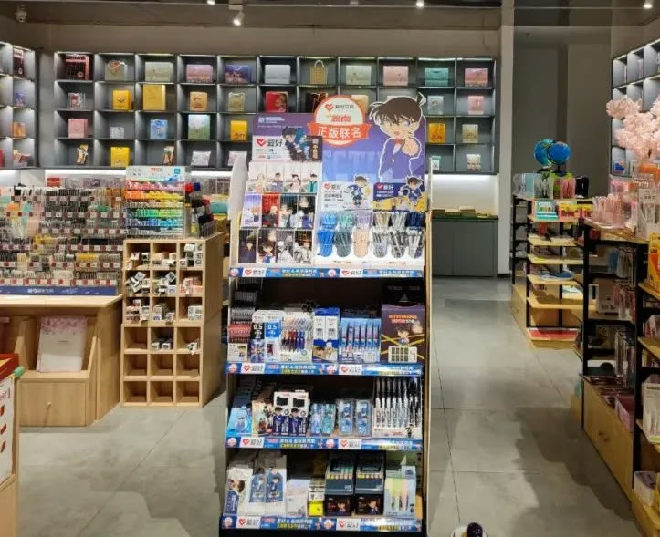
学习的重要场合。一年 2 次学汛，爱好在全国至少要开 800 场订货会，提升订货会的销量至关重要。销量从哪里来？从顾客消费旅程中每一个动作中“转化”而来！我们观察了多场订货会后，总结出了代理商在订货会的消费旅程。其中代理商拿到订货单、进去订货现场、走到货架前、看到包装、拿起产品、试写产品、填写订货单，是促成下单最核心的环节。我们要做的就是围绕提供三个购买，即购买理由、购买指令、购买指南，来改善代理商从拿到订货单到结束订货过程中的每一步，提升购买效率，降低沟通决策成本，最终实现销量的提升。
第一步，像设计单页一样设计订货单，机关算尽、充分发挥订货单的广告效用订货单是代理商在整个购物旅程中接触最紧密的物料，也是帮助代理商达成购买的核心物料，我们要通过重新设计订货单，提升代理商在订货过程中的购买效率。爱好以往的订货单内容主要是罗列产品、客户、返利优惠、预定目标量和实际订货量等基本信息，主要作用是让客户填写订货信息，方便爱好和代理商互相确认产品内容、件数和金额。
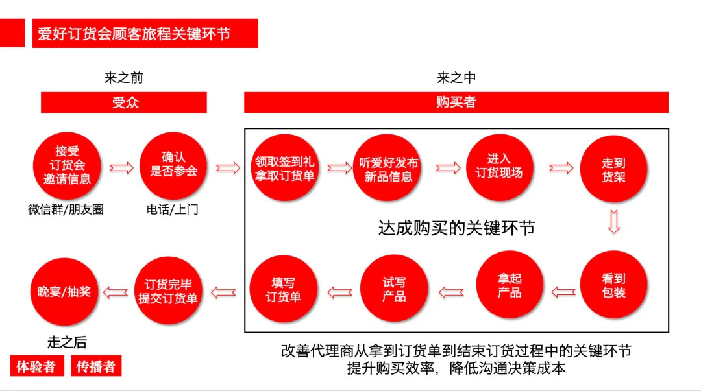
华与华改善订货单的三大原则：1 ）放大购买理由产品的本质是购买理由，订货单设计就是放大产品的购买理由。让代理商拿到订货单，不仅仅看到产品的信息，还能了解这款产品卖点，加速购买决策。2 ）设计代理商的选择逻辑在订货单中突出重点产品区域，让代理商在勾选产品时先看到重点产品，设计代理商选择逻辑的同时体现爱好的销售意志。3 ）设计代理商的阅读顺序、阅读速度先看到什么？再看到什么？哪些是重点信息？哪些是次级信息？通过板式设计，设计代理商的阅读顺序，让代理商快速的读完我们希望他阅读的信息。
以轻松小熊系列的订货单为例：
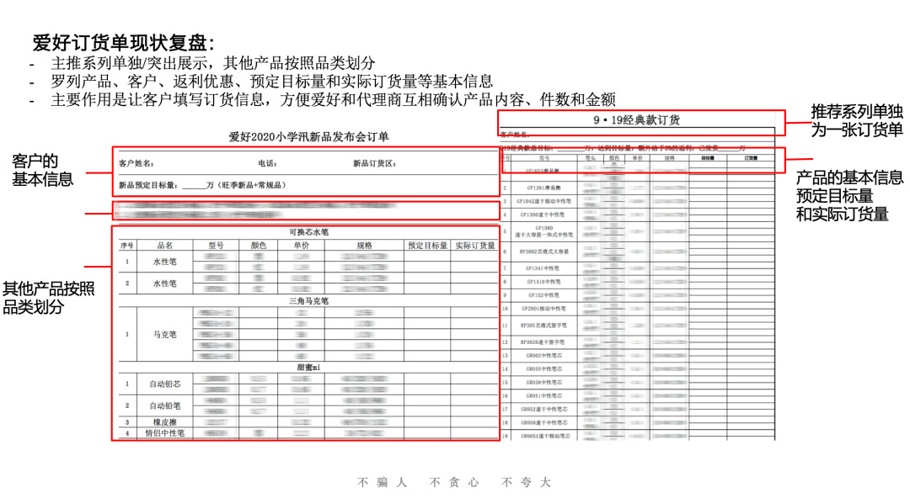
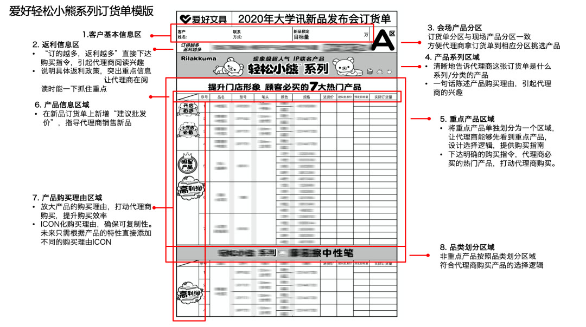
第一层是客户基本信息区，方便快速填写客户信息。第二层返利信息区，增加“订的越多，返利越多”的标题信息，直接下达购买指令，以及说明具体返利政策，通过字体设计突出重点信息“额外返利 N %”，让代理商在阅读时能一下抓住重点，清楚优惠政策。第三层，会场产品分区。我们将订货会现场进行了区域划分，订货单分区与现场产品分区信息一致，比如要看轻松小熊的产品，看到订货单上是 A 区，只要抬头跟着指示走到 A 区就能马上找到轻松小熊系列产品，代理商再也不用到处问业务员到处找产品，更方便代理商订货。第四层，一目了然体现产品系列区域。清晰地告诉代理商这张订货单是什么系列/分类的产品，并且一句话陈述该系列产品的购买理由，引起代理商的兴趣。第五层，主重点产品区域，设计代理商订购逻辑。将重点产品单独划分为一个区域，让代理商能够先看到重点产品，帮助代理商能够快速挑选到当季主推或热卖的产品。第六层，产品信息区域。在新品订货单上新增“建议批发价”，为代理商提供定价指导服务，帮助代理商做生意。第七层，产品购买理由区域。放大产品购买理由，如某款产品是畅销爆品，新开店都会进货，就在该产品旁放上“新开店必备”的 ICON ，如比较推荐小学店进某款产品，就在旁边放上“小学店必备”的 ICON ，通过 ICON 的形式为代理商提供购买指南，更好的帮助代理商进到适合自己门店的产品。购买是一种决策，营销是一种服务。我们要为消费者提供导购服务和决策咨询，降低消费者的选择成本，降低他的决策风险。通过改善，将订货单的职能从传统的记录订货信息，变为为代理商提供信息服务，帮助代理商更高效率、更低成本的挑选适销对路的产品，这正是在帮助代理商降低门店经营风险。这也是华与华强调的营销服务观，诚意正心服务顾客，货真价实，超值服务。
除了订货单的改善，我们还为订货会优化产品分区，并通过物料放大分区信息，帮助代理商更快速找到产品。
优化端架陈列，还原产品在门店实际的陈列效果。让代理商一目了然产品进货到门店后，陈列在端架上是什么效果，同时指导代理商如何进行产品陈列。
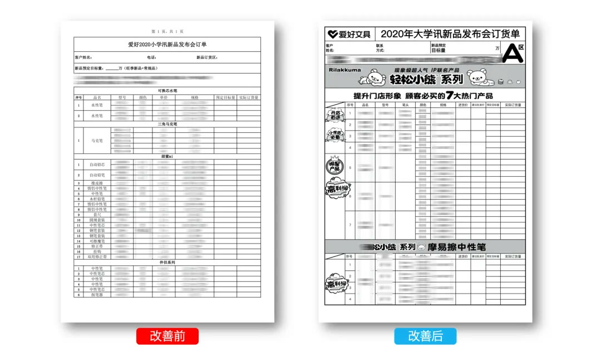
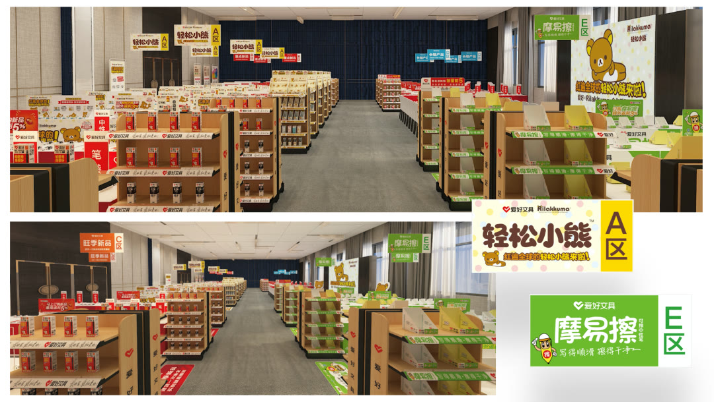
以及打造产品推荐榜，如小学店必备销量前 10 的产品，中学的必备销量前 10 的产品。这也是华与华的菜单思维，让代理商跟着榜单订，款款都畅销！
通过一系列订货会的改善动作，更好的为代理商订货提供信息服务和决策咨询，最终助力爱好订货会销量提升！
本文总结从制造驱动营销，走向营销引领制造，爱好文具案例是华与华“包装设计+产品开发+企业战略+品牌营销”一体化服务赋能传统制造型企业的代表案例。
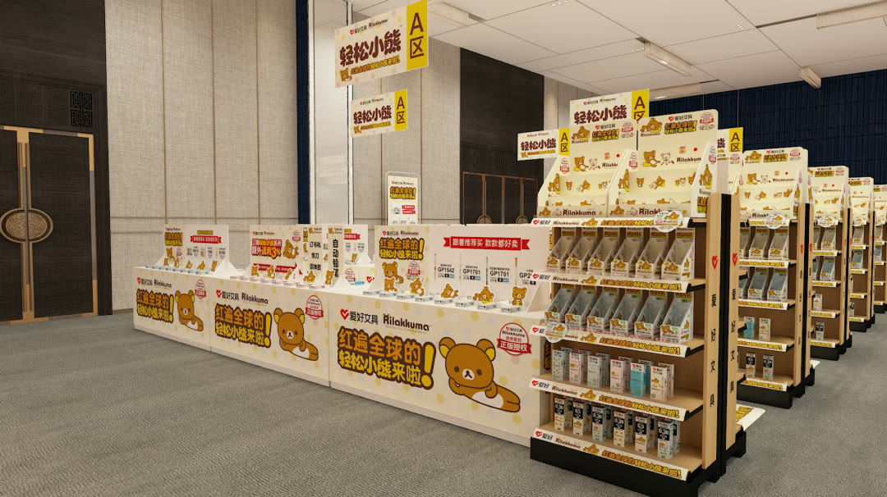
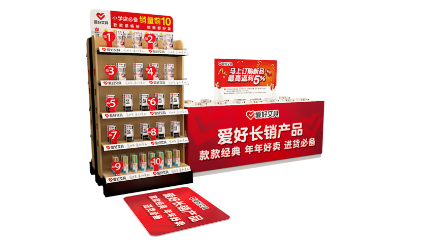
助力爱好文具打破行业困境，提升渠道士气，跳出低价恶性竞争，获得定价权，实现量利齐飞。在疫情冲击之下，依旧实现同比增长 23 . 8 %。（数据截止 2021 年 9 月）做营销就是做服务，凡事彻底做好自己，诚意正心服务顾客。合作 4 年，华与华为爱好做了 5 大关键动作：第一，基于爱好资源禀赋及社会问题，制定高品质企业战略；第二，创意超级符号“爱好之心”和品牌谚语“爱好文具，爱就是好”高效率、低成本的为爱好建立、积累品牌资产；第三，翻新全线产品包装，规划包装信息层级，提高包装在货架上被发现、被拿起的转化率，提升代理商、业务员理货的效率，其中笔芯包装设计更是为爱好获得定价权，价格翻一倍，销量占笔芯品类的 28 %，真正实现了量利齐飞；第四，开发不脏卷考试笔、轻松小熊系列、办公笔等多系列产品，不脏卷考试笔成为爱好考试系列拳头产品，占比 27 %。轻松小熊系列更是打开爱好 IP 联名新局面，帮助爱好成功拓宽西西弗书店等高端渠道，名侦探柯南上市 4 个月，热销超千万。第五，设计门头形象、货柜形象，通过门店改善、终端物料、陈列道具开发，代理商大会、代理商订货会改善等一套渠道组合拳，提升爱好渠道信心、提升爱好门店销售力。